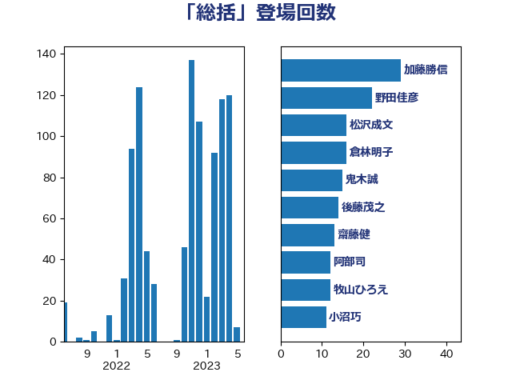

単語「総括」

| 加藤勝信 | 自由民主党 | 29 回 |
| 野田佳彦 | 立憲民主党 | 22 回 |
| 松沢成文 | 日本維新の会 | 16 回 |
| 倉林明子 | 日本共産党 | 16 回 |
| 鬼木誠 | 立憲民主党 | 15 回 |
| 後藤茂之 | 自由民主党 | 14 回 |
| 齋藤健 | 自由民主党 | 13 回 |
| 阿部司 | 日本維新の会 | 12 回 |
| 牧山ひろえ | 立憲民主党 | 12 回 |
| 小沼巧 | 立憲民主党 | 11 回 |
| 宮本徹 | 日本共産党 | 11 回 |
| 鈴木俊一 | 自由民主党 | 10 回 |
| 福島みずほ | 社会民主党 | 10 回 |
| 林芳正 | 自由民主党 | 10 回 |
| 大島敦 | 立憲民主党 | 10 回 |
| 赤羽一嘉 | 公明党 | 9 回 |
| 新藤義孝 | 自由民主党 | 9 回 |
| 宮路拓馬 | 自由民主党 | 9 回 |
| 伊東信久 | 日本維新の会 | 9 回 |
| 若松謙維 | 公明党 | 8 回 |
| 舩後靖彦 | れいわ新選組 | 8 回 |
| 古屋範子 | 公明党 | 8 回 |
| 田中健 | 国民民主党 | 7 回 |
| 徳永久志 | 立憲民主党 | 7 回 |
| 岸田文雄 | 自由民主党 | 7 回 |
| 小倉將信 | 自由民主党 | 7 回 |
| 仁比聡平 | 日本共産党 | 7 回 |
| 井上哲士 | 日本共産党 | 7 回 |
| 上月良祐 | 自由民主党 | 7 回 |
| 阿部知子 | 立憲民主党 | 6 回 |
| 関芳弘 | 自由民主党 | 6 回 |
| 野間健 | 立憲民主党 | 6 回 |
| 藤岡隆雄 | 立憲民主党 | 6 回 |
| 笠井亮 | 日本共産党 | 6 回 |
| 田村智子 | 日本共産党 | 6 回 |
| 水野素子 | 立憲民主党 | 6 回 |
| 打越さく良 | 立憲民主党 | 6 回 |
| 川田龍平 | 立憲民主党 | 6 回 |
| 岡田直樹 | 自由民主党 | 6 回 |
| 山本香苗 | 公明党 | 6 回 |
| 北神圭朗 | 無所属 | 6 回 |
| 前原誠司 | 国民民主党 | 6 回 |
| 音喜多駿 | 日本維新の会 | 5 回 |
| 足立康史 | 日本維新の会 | 5 回 |
| 自見はなこ | 自由民主党 | 5 回 |
| 笠浩史 | 無所属 | 5 回 |
| 牧原秀樹 | 自由民主党 | 5 回 |
| 片山大介 | 日本維新の会 | 5 回 |
| 池下卓 | 日本維新の会 | 5 回 |
| 末松信介 | 自由民主党 | 5 回 |
| 宮本岳志 | 日本共産党 | 5 回 |
| 大塚拓 | 自由民主党 | 5 回 |
| 堀場幸子 | 日本維新の会 | 5 回 |
| 吉田統彦 | 立憲民主党 | 5 回 |
| 上田清司 | 国民民主党 | 5 回 |
| 高橋光男 | 公明党 | 4 回 |
| 進藤金日子 | 自由民主党 | 4 回 |
| 萩生田光一 | 自由民主党 | 4 回 |
| 石原宏高 | 自由民主党 | 4 回 |
| 田嶋要 | 立憲民主党 | 4 回 |
| 渡辺博道 | 自由民主党 | 4 回 |
| 泉健太 | 立憲民主党 | 4 回 |
| 沢田良 | 日本維新の会 | 4 回 |
| 橋本岳 | 自由民主党 | 4 回 |
| 森屋隆 | 立憲民主党 | 4 回 |
| 梅村聡 | 日本維新の会 | 4 回 |
| 根本匠 | 自由民主党 | 4 回 |
| 木村英子 | れいわ新選組 | 4 回 |
| 斉藤鉄夫 | 公明党 | 4 回 |
| 平木大作 | 公明党 | 4 回 |
| 小川淳也 | 立憲民主党 | 4 回 |
| 天畠大輔 | れいわ新選組 | 4 回 |
| 和田有一朗 | 日本維新の会 | 4 回 |
| 吉川元 | 立憲民主党 | 4 回 |
| 黄川田仁志 | 自由民主党 | 3 回 |
| 高良鉄美 | 無所属 | 3 回 |
| 須藤元気 | 無所属 | 3 回 |
| 長妻昭 | 立憲民主党 | 3 回 |
| 野田聖子 | 自由民主党 | 3 回 |
| 谷公一 | 自由民主党 | 3 回 |
| 西銘恒三郎 | 自由民主党 | 3 回 |
| 羽田次郎 | 立憲民主党 | 3 回 |
| 穀田恵二 | 日本共産党 | 3 回 |
| 福山哲郎 | 立憲民主党 | 3 回 |
| 田村まみ | 国民民主党 | 3 回 |
| 漆間譲司 | 日本維新の会 | 3 回 |
| 渡辺創 | 立憲民主党 | 3 回 |
| 河野太郎 | 自由民主党 | 3 回 |
| 永岡桂子 | 自由民主党 | 3 回 |
| 森山浩行 | 立憲民主党 | 3 回 |
| 柴田巧 | 日本維新の会 | 3 回 |
| 松原仁 | 立憲民主党 | 3 回 |
| 杉尾秀哉 | 立憲民主党 | 3 回 |
| 早稲田ゆき | 立憲民主党 | 3 回 |
| 徳永エリ | 立憲民主党 | 3 回 |
| 川合孝典 | 国民民主党 | 3 回 |
| 山崎誠 | 立憲民主党 | 3 回 |
| 太栄志 | 立憲民主党 | 3 回 |
| 和田義明 | 自由民主党 | 3 回 |
| 勝部賢志 | 立憲民主党 | 3 回 |
| 伊藤岳 | 日本共産党 | 3 回 |
| 中野洋昌 | 公明党 | 3 回 |
| 中島克仁 | 立憲民主党 | 3 回 |
| 三浦信祐 | 公明党 | 3 回 |
| 一谷勇一郎 | 日本維新の会 | 3 回 |
| 高木啓 | 自由民主党 | 2 回 |
| 青柳仁士 | 日本維新の会 | 2 回 |
| 青山大人 | 立憲民主党 | 2 回 |
| 長友慎治 | 国民民主党 | 2 回 |
| 野村哲郎 | 自由民主党 | 2 回 |
| 西村康稔 | 自由民主党 | 2 回 |
| 藤巻健太 | 日本維新の会 | 2 回 |
| 舟山康江 | 国民民主党 | 2 回 |
| 竹詰仁 | 国民民主党 | 2 回 |
| 竹内譲 | 公明党 | 2 回 |
| 空本誠喜 | 日本維新の会 | 2 回 |
| 秋葉賢也 | 自由民主党 | 2 回 |
| 石橋通宏 | 立憲民主党 | 2 回 |
| 清水貴之 | 日本維新の会 | 2 回 |
| 浮島智子 | 公明党 | 2 回 |
| 浦野靖人 | 日本維新の会 | 2 回 |
| 浅川義治 | 日本維新の会 | 2 回 |
| 池畑浩太朗 | 日本維新の会 | 2 回 |
| 武井俊輔 | 自由民主党 | 2 回 |
| 櫛渕万里 | れいわ新選組 | 2 回 |
| 横沢高徳 | 立憲民主党 | 2 回 |
| 森英介 | 自由民主党 | 2 回 |
| 森屋宏 | 自由民主党 | 2 回 |
| 梅村みずほ | 日本維新の会 | 2 回 |
| 星野剛士 | 自由民主党 | 2 回 |
| 後藤祐一 | 立憲民主党 | 2 回 |
| 岡本三成 | 公明党 | 2 回 |
| 山本順三 | 自由民主党 | 2 回 |
| 山岸一生 | 立憲民主党 | 2 回 |
| 山口壯 | 自由民主党 | 2 回 |
| 小野泰輔 | 日本維新の会 | 2 回 |
| 小池晃 | 日本共産党 | 2 回 |
| 小島敏文 | 自由民主党 | 2 回 |
| 宗清皇一 | 自由民主党 | 2 回 |
| 奥野総一郎 | 立憲民主党 | 2 回 |
| 大野敬太郎 | 自由民主党 | 2 回 |
| 大塚耕平 | 国民民主党 | 2 回 |
| 塩川鉄也 | 日本共産党 | 2 回 |
| 塚田一郎 | 自由民主党 | 2 回 |
| 國場幸之助 | 自由民主党 | 2 回 |
| 吉良州司 | 無所属 | 2 回 |
| 吉田とも代 | 日本維新の会 | 2 回 |
| 吉川沙織 | 立憲民主党 | 2 回 |
| 古賀之士 | 立憲民主党 | 2 回 |
| 冨樫博之 | 自由民主党 | 2 回 |
| 佐藤英道 | 公明党 | 2 回 |
| 佐藤公治 | 立憲民主党 | 2 回 |
| 伊藤孝江 | 公明党 | 2 回 |
| 伊佐進一 | 公明党 | 2 回 |
| 中野英幸 | 自由民主党 | 2 回 |
| 中川正春 | 立憲民主党 | 2 回 |
| 下条みつ | 立憲民主党 | 2 回 |
| たがや亮 | れいわ新選組 | 2 回 |
| 高橋千鶴子 | 日本共産党 | 1 回 |
| 高木かおり | 日本維新の会 | 1 回 |
| 馬場雄基 | 立憲民主党 | 1 回 |
| 馬場伸幸 | 日本維新の会 | 1 回 |
| 青木一彦 | 自由民主党 | 1 回 |
| 阿部弘樹 | 日本維新の会 | 1 回 |
| 阿達雅志 | 自由民主党 | 1 回 |
| 鎌田さゆり | 立憲民主党 | 1 回 |
| 鈴木敦 | 国民民主党 | 1 回 |
| 鈴木庸介 | 立憲民主党 | 1 回 |
| 鈴木宗男 | 日本維新の会 | 1 回 |
| 道下大樹 | 立憲民主党 | 1 回 |
| 辻元清美 | 立憲民主党 | 1 回 |
| 足立敏之 | 自由民主党 | 1 回 |
| 赤木正幸 | 日本維新の会 | 1 回 |
| 谷田川元 | 立憲民主党 | 1 回 |
| 西田昌司 | 自由民主党 | 1 回 |
| 菅義偉 | 自由民主党 | 1 回 |
| 芳賀道也 | 国民民主党 | 1 回 |
| 舞立昇治 | 自由民主党 | 1 回 |
| 笹川博義 | 自由民主党 | 1 回 |
| 稲津久 | 公明党 | 1 回 |
| 秋野公造 | 公明党 | 1 回 |
| 福重隆浩 | 公明党 | 1 回 |
| 福島伸享 | 無所属 | 1 回 |
| 神谷宗幣 | 参政党 | 1 回 |
| 神田潤一 | 自由民主党 | 1 回 |
| 神津たけし | 立憲民主党 | 1 回 |
| 礒崎哲史 | 国民民主党 | 1 回 |
| 石川昭政 | 自由民主党 | 1 回 |
| 石川大我 | 立憲民主党 | 1 回 |
| 石垣のりこ | 立憲民主党 | 1 回 |
| 畦元将吾 | 自由民主党 | 1 回 |
| 田村貴昭 | 日本共産党 | 1 回 |
| 玉木雄一郎 | 国民民主党 | 1 回 |
| 浜野喜史 | 国民民主党 | 1 回 |
| 浅野哲 | 国民民主党 | 1 回 |
| 河西宏一 | 公明党 | 1 回 |
| 江田憲司 | 立憲民主党 | 1 回 |
| 水岡俊一 | 立憲民主党 | 1 回 |
| 森本真治 | 立憲民主党 | 1 回 |
| 梶山弘志 | 自由民主党 | 1 回 |
| 柳本顕 | 自由民主党 | 1 回 |
| 柚木道義 | 立憲民主党 | 1 回 |
| 枝野幸男 | 立憲民主党 | 1 回 |
| 松野明美 | 日本維新の会 | 1 回 |
| 松村祥史 | 自由民主党 | 1 回 |
| 杉田水脈 | 自由民主党 | 1 回 |
| 本田顕子 | 自由民主党 | 1 回 |
| 本庄知史 | 立憲民主党 | 1 回 |
| 末松義規 | 立憲民主党 | 1 回 |
| 斎藤アレックス | 国民民主党 | 1 回 |
| 手塚仁雄 | 立憲民主党 | 1 回 |
| 庄子賢一 | 公明党 | 1 回 |
| 平口洋 | 自由民主党 | 1 回 |
| 岬麻紀 | 日本維新の会 | 1 回 |
| 岩渕友 | 日本共産党 | 1 回 |
| 岡田克也 | 立憲民主党 | 1 回 |
| 岡本あき子 | 立憲民主党 | 1 回 |
| 山田勝彦 | 立憲民主党 | 1 回 |
| 山本左近 | 自由民主党 | 1 回 |
| 山下貴司 | 自由民主党 | 1 回 |
| 山下芳生 | 日本共産党 | 1 回 |
| 小田原潔 | 自由民主党 | 1 回 |
| 小林鷹之 | 自由民主党 | 1 回 |
| 安江伸夫 | 公明党 | 1 回 |
| 大西健介 | 立憲民主党 | 1 回 |
| 大串博志 | 立憲民主党 | 1 回 |
| 塩崎彰久 | 自由民主党 | 1 回 |
| 城井崇 | 立憲民主党 | 1 回 |
| 國重徹 | 公明党 | 1 回 |
| 国光あやの | 自由民主党 | 1 回 |
| 嘉田由紀子 | 無所属 | 1 回 |
| 吉井章 | 自由民主党 | 1 回 |
| 古川俊治 | 自由民主党 | 1 回 |
| 友納理緒 | 自由民主党 | 1 回 |
| 原口一博 | 立憲民主党 | 1 回 |
| 勝目康 | 自由民主党 | 1 回 |
| 務台俊介 | 自由民主党 | 1 回 |
| 伴野豊 | 立憲民主党 | 1 回 |
| 伊藤孝恵 | 国民民主党 | 1 回 |
| 伊波洋一 | 無所属 | 1 回 |
| 井上貴博 | 自由民主党 | 1 回 |
| 中谷一馬 | 立憲民主党 | 1 回 |
| 中西祐介 | 自由民主党 | 1 回 |
| 中西健治 | 自由民主党 | 1 回 |
| 中山展宏 | 自由民主党 | 1 回 |
| 中司宏 | 日本維新の会 | 1 回 |
| 世耕弘成 | 自由民主党 | 1 回 |
| 上田勇 | 公明党 | 1 回 |
| 三ッ林裕巳 | 自由民主党 | 1 回 |
| こやり隆史 | 自由民主党 | 1 回 |